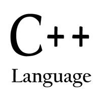
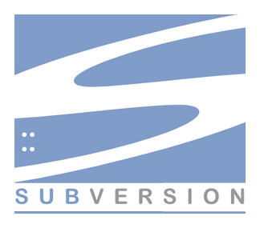
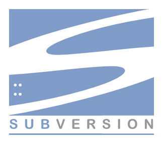

 



Резюме
Контакты
- Почта: poltavsky.alexandr@gmail.com
- Телефон: +7 (964) 791-19-61
Общая информация
Я ищу работу, связанную с программированием на C++ и, желательно, трехмерной компьютерной графикой. Меня с детства интересуют компьютеры, и со временем я получил достаточно хорошее представление об архитектуре вычислительных машин, структурах данных и алгоритмах. Так, например, в области 3D графики я разработал новый алгоритм сглаживания (anti-aliasing) DFAA ( статья была одобрена для публикации после доработки в журнале JCGT ). А также разработал на C++ библиотеку atomic_data, которая позволяет использовать неблокирующее программирование (lock-free programming) со структурами данных любого размера (код, включая Android Studio NDK проект, доступен на GitHub ).
Технические навыки
- Глубокое знание C++11/C++14 и Standard Template Library (STL)
- Достаточно хорошо знаю DirectX 9, DirectX 11 и OpenGL APIs
- Есть опыт работы с HLSL и GLSL
- Изучал архитектуру и программирование NVIDIA CUDA
- Есть опыт с Java и JNI
- Хорошие знание Веб-технологий (PHP, JavaScript, HTML, немного Perl)
- Достаточно много работал с MySQL, а также совсем немного с Oracle PL/SQL
- Хорошее понимание многопоточного и неблокирующего (lock-free) программирования
- Понимаю ассемблерный код, и умею оптимизировать программы, в том числе для SIMD
- Владею линейной алгеброй, дифференциальным исчислением и тригонометрией
- Работал с GIT и SVN
- Есть опыт Bash и работы в Linux
Опыт работы
Корпорация МАИР (Россия, Москва), август 2004 - декабрь 2005
Должность: инженер-программист
Занимался поддержкой внутренней программы-клиента для доступа к базе данных, написанной на C++. Исправлял ошибки и улучшал пользовательский интерфейс.
РКБ Медия (Россия, Москва), декабрь 2005 - июнь 2008
Должность: инженер-программист, далее старший инженер-программист
Занимался разработкой веб-приложений на основе сервера Apache, PHP (немного Perl) и MySQL. Делал немного верстки HTML страниц c использованием JavaScript и CSS.
Одной из задач была разработки на языке C модуля статистики для Apache.
Был опыт руководства небольшой группой программистов из 3-х человек.
Институт Стволовых Клеток Человека (Россия, Москва), август 2008 - май 2011
Должность: инженер-программист
Занимался разработкой внутреннего продукта - 3D компьтерная программа на Visual C++ с использованием OpenGL API для демонстрации клиентам эффектов косметических инъекций.
Независимый разработчик, с 2011 по текующее время
Решил на время отойти от активной карьеры для реализации собственных идей. Попробовал написать CMS (система управления контентом) и запустить новостной сайт. Позже написал игру на Java и выложил в магазине Google Play (Color Throne).
Также в этот период значительно продвинулся в плане C++, хорошо изучил новые конструкции C++11. Много читал про алгоритмы и подходы отображения (rendering) в 3D компьютерной графике, написал пару тестовых програм, предложил новый алгоритм сглаживания (DFAA anti-aliasing). А также хорошо изучил тему неблокирующего программирования (lock-free programming) и предложил библиотеку atomic_data.
Образование
Математика и информатика, Московский инженерно-физический институт (МИФИ) (незаконченное)
Сертификаты
Zend Certified Engineer (LAMP software stack)
Проекты и публикации
Introducing DFAA anti-aliasing algorithm
В этой статье я предлагаю новый алгоритм сглаживания - DFAA. Код на HLSL и проект Render Monkey доступны на GitHub.
atomic_data: A Multibyte General Purpose Lock-Free Data Structure
Описываю проблемы неблокирующего (lock-free) программирования и предлагаю новую неблокирующуюю структуру данных atomic_data. Много примеров, а также доступен проект Android Studio (NDK) project.
A quick and easy way to print a float in base-10
Числа с плавающей точкой имеют большое значения в программировании. Эта статья показывает необычный и довольно умный метод печати числа с плавающей точкой на экран.
Color Throne - Brain Gymnastics (an android game)
Простая игра, написанная на Java в Android Studio. Смотрите на Google Play.
Языки
- родной русский
- продвинутый английский
- начальный немецкий